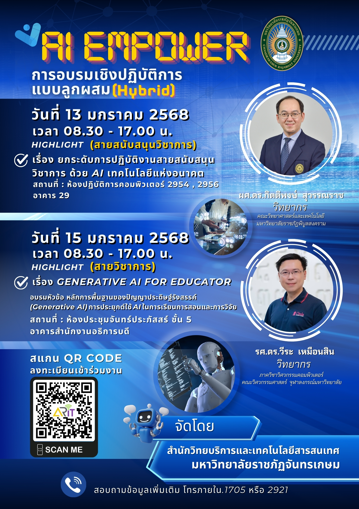

ยินดีต้อนรับสู่การอบรม

การอบรมเชิงปฏิบัติการเรื่อง Generative AI for Educator
วันที่ 15 ตุลาคม 2568 ณ ห้องปฏิบัติการคอมพิวเตอร์ อาคาร 29
โดย รองศาสตราจารย์ ดร.วีระ เหมือนสิน
คณะวิศวกรรมศาสตร์ จุฬาลงกรณ์มหาวิทยาลัย
จัดโดย สำนักวิทยบริการและเทคโนโลยีสารสนเทศ มหาวิทยาลัยราชภัฏจันทรเกษม
การอบรมเชิงปฏิบัติการเรื่อง Generative AI for Educator
วันที่ 15 ตุลาคม 2568 ณ ห้องปฏิบัติการคอมพิวเตอร์ อาคาร 29
โดย รองศาสตราจารย์ ดร.วีระ เหมือนสิน
คณะวิศวกรรมศาสตร์ จุฬาลงกรณ์มหาวิทยาลัย